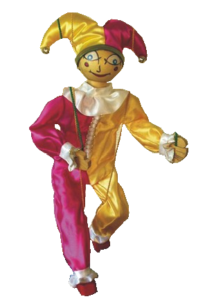

My sedimentary capsule - I'm kept - No way out
splAtter 🎆 ♋ spl@tter e verywhe re and on these walls I call to ✝️ pressed against me and suffocate me 👔 rapid closing my eyes repeated in a 🛐 pattern They cant read - Because i am ⚔️ mighty and strong - Constantly 🌀 begrudging To break out and nnever surrender my body ❤️🔥 my cold face surrounds itself with rotting meat so i can Breathe in a way no one else ccan, So my breath cant be taken away again, so My heart never stops beating - ♏ never surrender This Great sinking ship, Last of an oceanic monument falling forever
The 51st Series A.E. He might might might have started one star in the galaxy ⚧I
